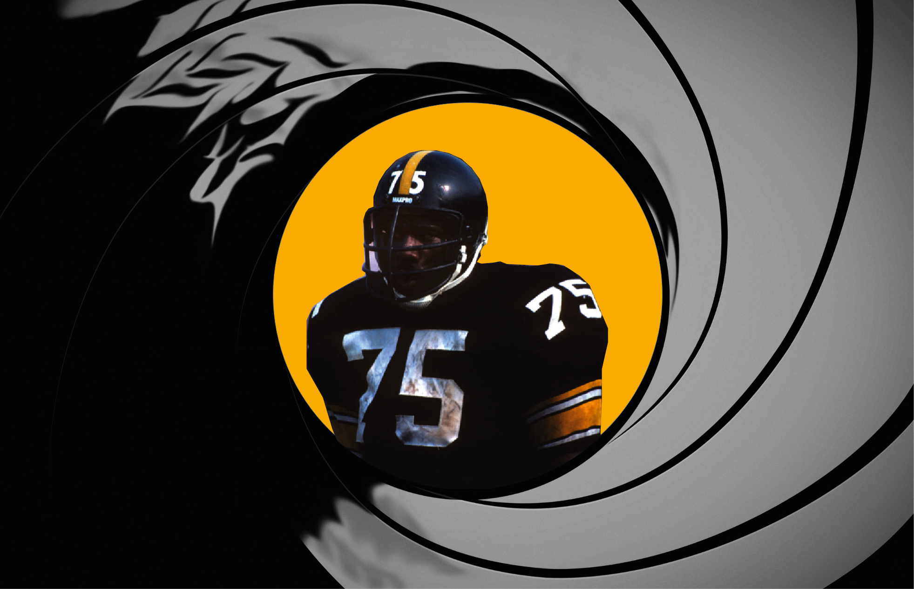
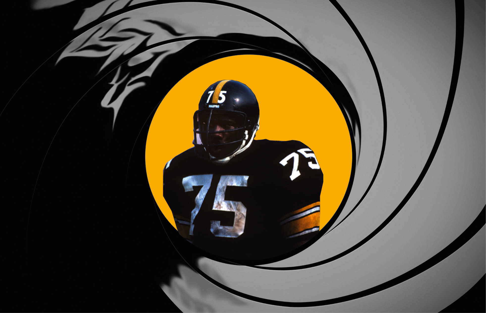
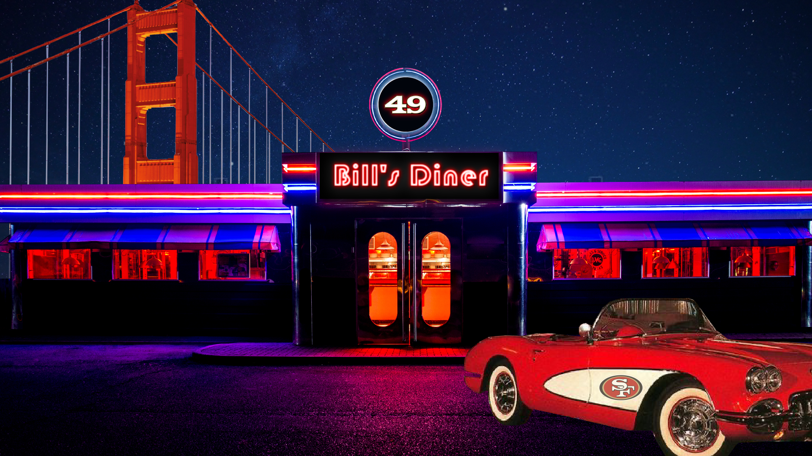
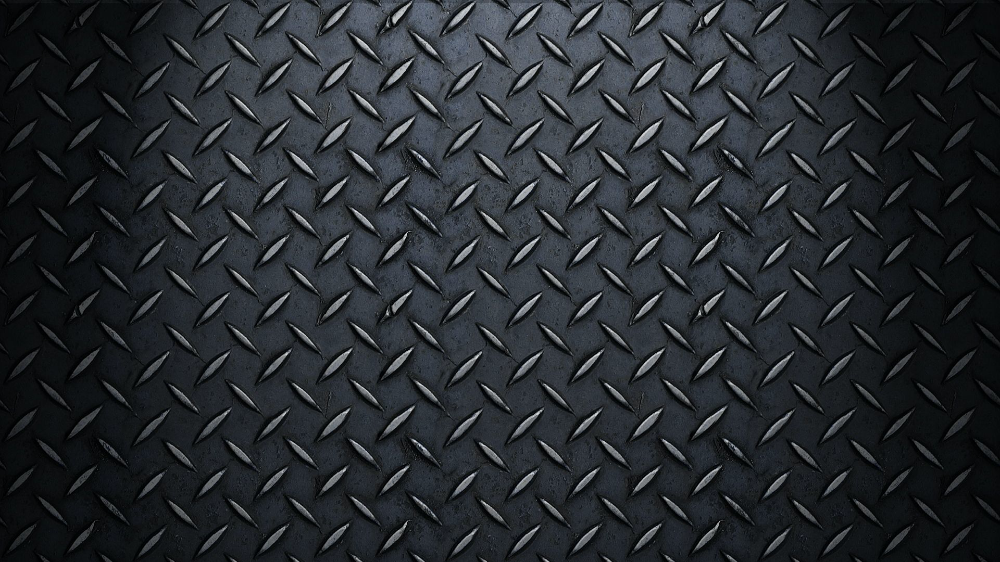

The Steel Curtain was Raised in the seventies, as the pittsburghs steelers won supuer bowls in 1974. These wins were thanks to Pittsburgh's defense, featuring the intimidating figures of Joe Greene, Jack Ham, and Mel Blount, which slammed the gate shut on opponents.